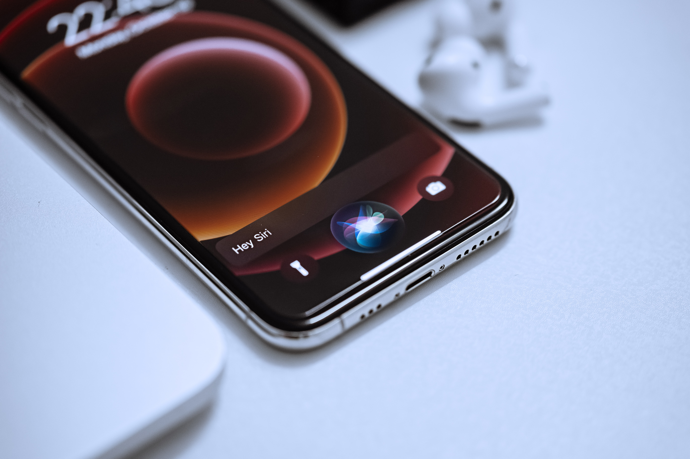
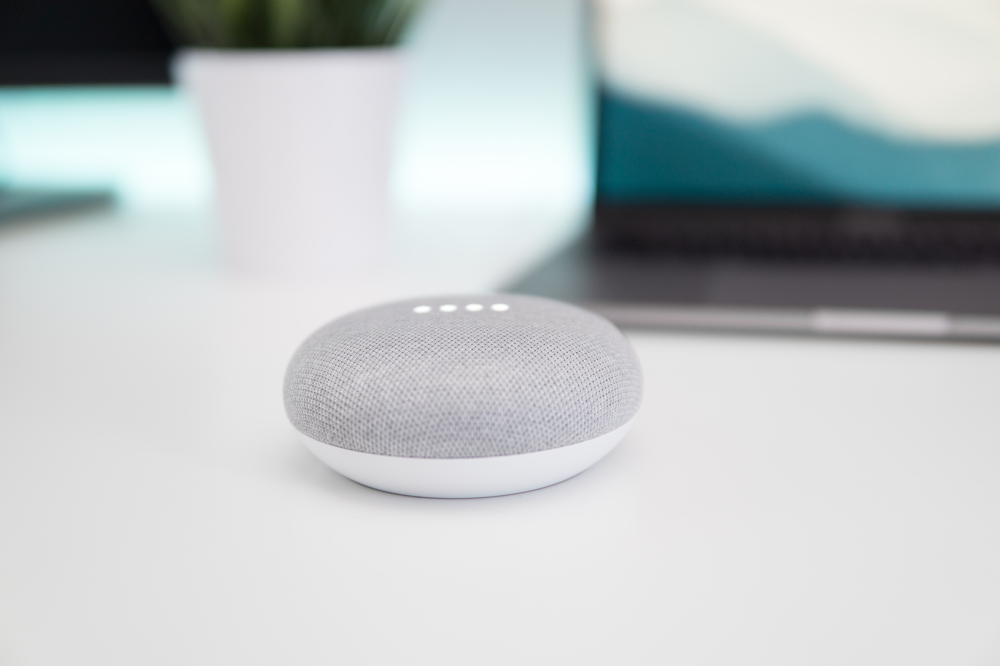

QUÉ ES
Es un dispositivo hardware que funciona con un software de inteligencia que facilita la interacción persona-ordenador a través de altavoces o dispositivos móviles. Nos ayuda a automatizar y realizar tareas de una forma más rápida. Algunos de los más conocidos son Siri, Google Assistant y Amazon Alexa.
 
HISTORIA
IBM Shoebox fué la primera herramienta que permitió ejecutar el reconocimiento digital de voz en 1961 y fue lanzada al mercado en 1962 en Seattle. En 1981 se lanza la primera PC de IBM, desarrollada veinte años antes, podía reconocer 16 palabras habladas y los números del 0 al 9.
El siguiente avance de la tecnología de reconocimiento de voz se logró en la década de 1970 en la Universidad Carnegie Mellon en Pittsburgh, Pensilvania, con un fuerte apoyo del Departamento de Defensa de EE.UU. y su agencia DARPA. Su herramienta Harpy dominó mil palabras, similar al vocabulario de un niño de tres años.
Aproximadamente diez años después, el mismo grupo de científicos desarrolló un sistema que podía analizar no solo palabras individuales,sino también secuencias completas de palabras, con el apoyo de modelos ocultos de Markov. Así, los primeros asistentes virtuales en utilizar software de reconocimiento de voz fueron contestadores automáticos y grabadoras digitales para software médico.
En la década de 1990, la tecnología de reconocimiento de voz digital se convirtió en parte de las computadoras personales, con Microsoft, IBM, Philips y Lernout & Hauspie compitiendo por los clientes. Su función se basa en respuestas automáticas pregrabadas que se muestran al usuario después de reconocer ciertas palabras clave.
El lanzamiento al mercado del primer teléfono inteligente IBM Simon en 1994 sentó las bases para los asistentes virtuales inteligentes tal como se conocen hoy en día.
Siri fue el primer asistente virtual digital instalado en un teléfono inteligente, presentado como característica del iPhone 4S en 2011.
Hoy en día ha avanzado hasta el nivel de controlar cosas del hogar, como por ejemplo encender las luces o bajar las persianas.
CÓMO FUNCIONA
Un asistente virtual procesa, interpreta y realiza la acción o responde, a la voz para pedir una tarea o cierta información.
Uno de los aspectos más importantes de este dispositivo es la capacidad de organizar y mantener la información. Su tecnología es posible gracias a la combinación de dispositivos móviles, interfaces de programación de aplicaciones y el gran aumento de aplicaciones móviles.
BENEFICIOS EN LA IPO
Esta herramienta está siendo una gran facilidad para personas con discapacidades visuales o físicas, ya que el asistente realiza tareas sin la necesidad de que ellos se muevan o tengan que utilizar un dispositivo móvil.
AlexaOPCIONES
Las opciones más usadas son Siri y Alexa, entre sus funciones están
| Siri | Alexa |
|---|---|
| Llamar por teléfono a quien tú quieras | Escuchar audiolibros de Kindle. En los dispositivos Echo Show y Echo Spot, además de escuchar, puede visualizar el procedimiento por la pantalla. |
| Recomendar la ruta adecuada con Apple Maps. | Pedir comida a domicilio, e incluso, un Uber |
| Reservar en restaurantes. | Controlar dispositivos de domótica (luces, enchufes, electrodomésticos, sistemas de calefacción, etc.). |
| Conocer el tiempo meteorológico. | Escuchar música a través de streaming, como Spotify, YouTube o Amazon Prime Music. |
| Traducir. | Mantenerse al día con las noticias. |
| Transcribir de voz a texto | Rastrear tus pedidos online. |